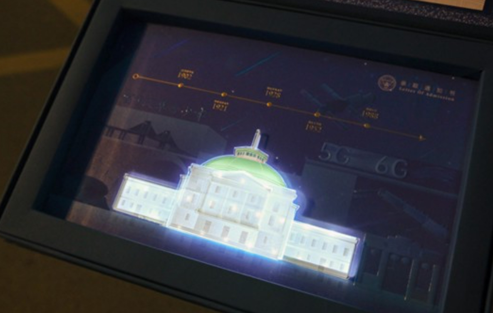
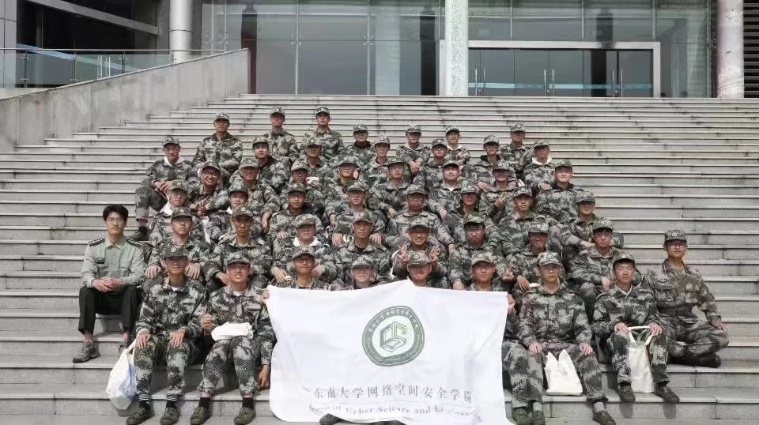
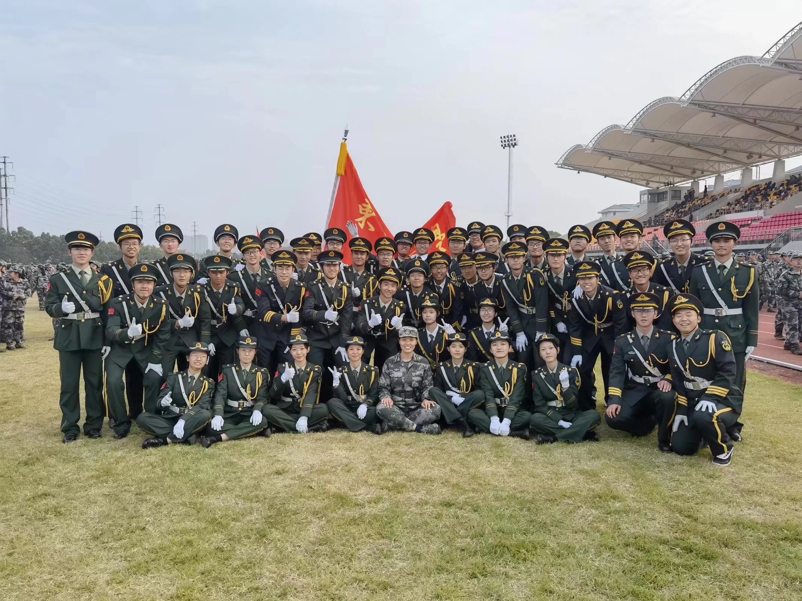
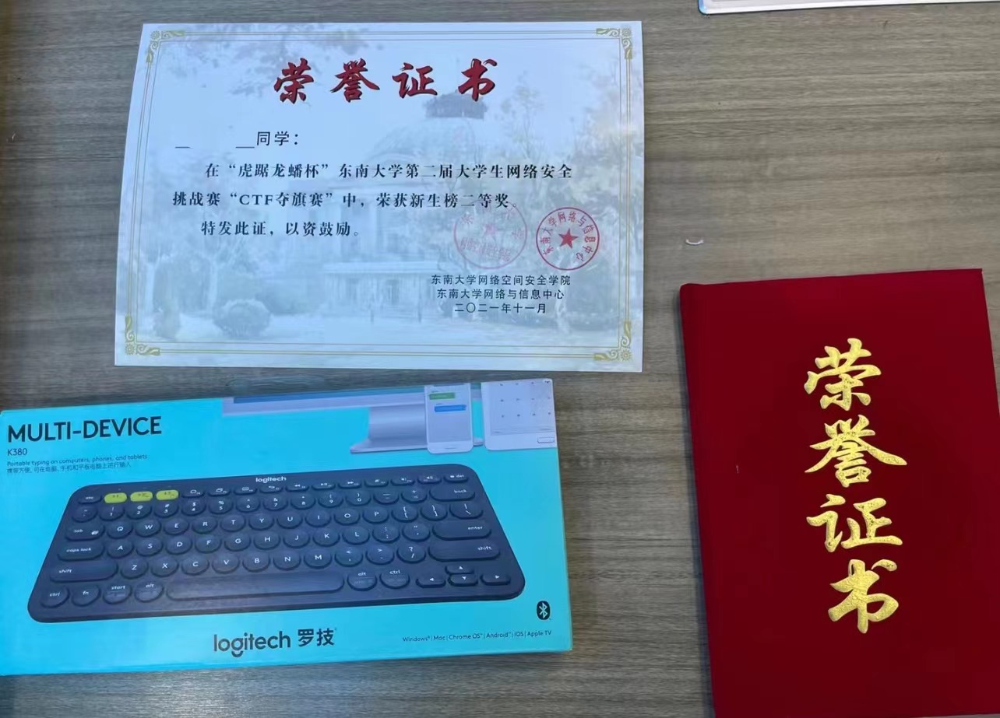
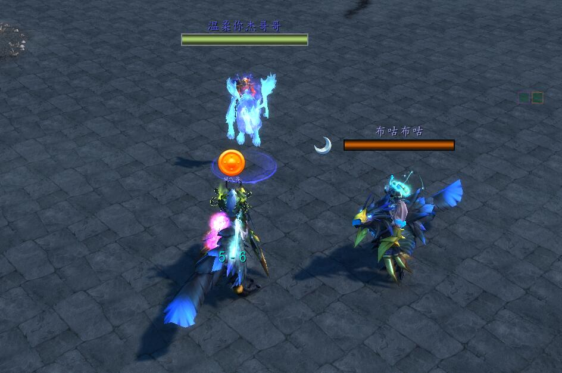
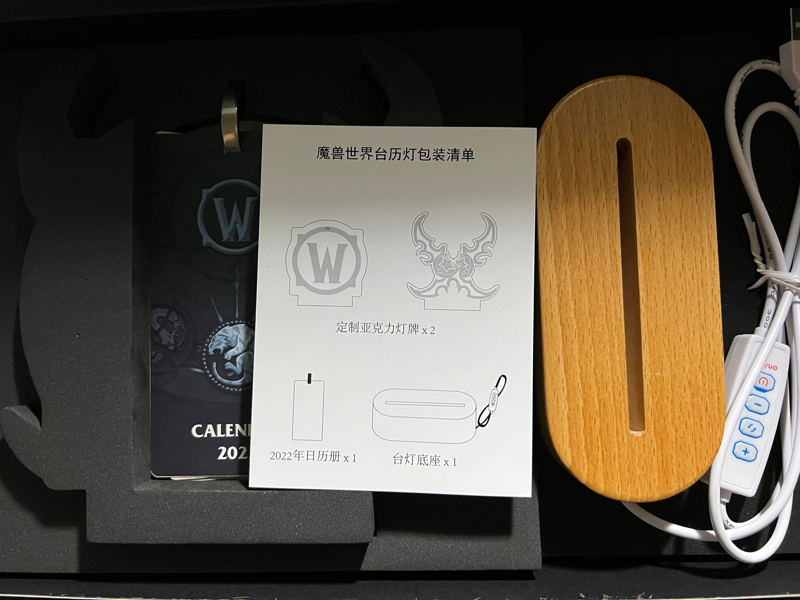
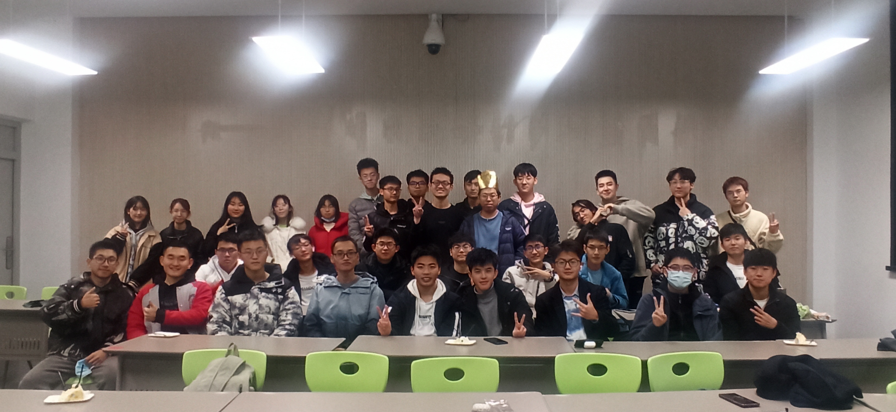
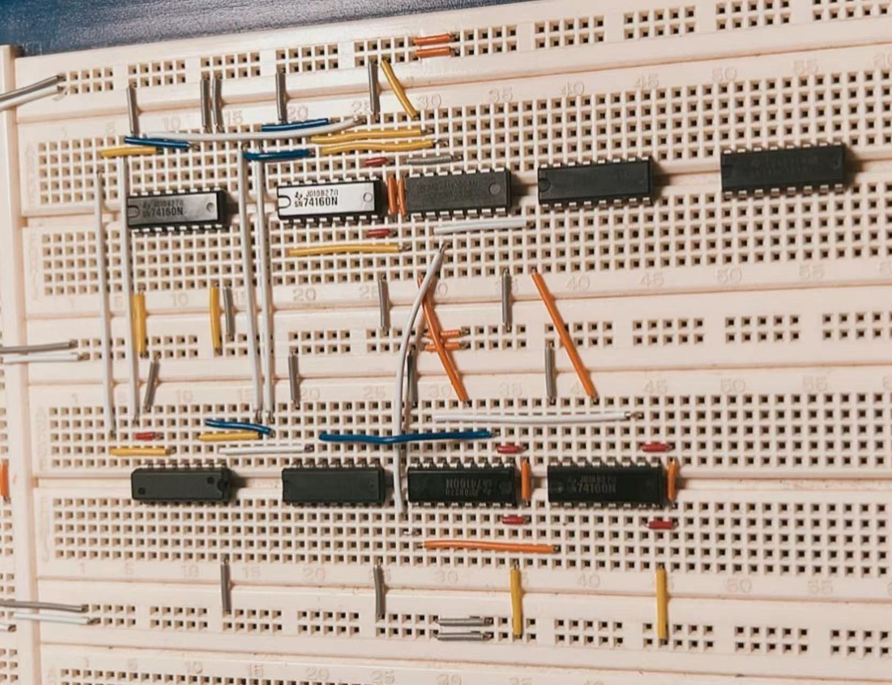
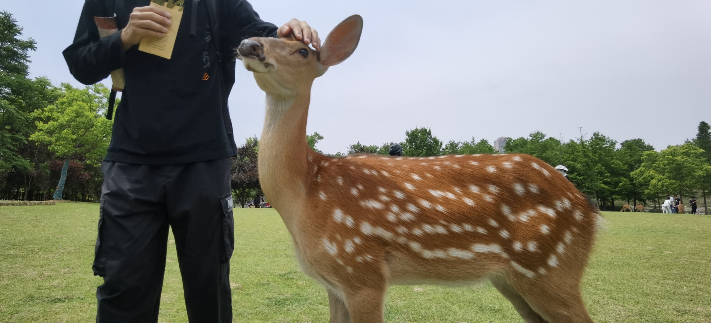
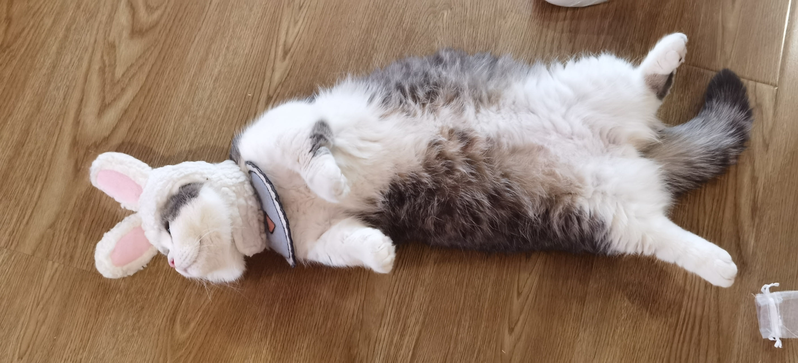

Hunter 的大学之旅
人生好比是一个 Recurrent neural network(循环神经网络)，我们这一辈子都在做的事情就是在为这个网络调参。它的输出是我们的过去，现在与未来，
输入是我们与生俱来的智力，天赋。
在我们年幼的时候懵懂无知，儿时那部分的权重微乎其微，到了小学，有些人选择奥数，有些人选择书法，不同的weight从小学开始一直前向传播到当下。
高考或许是我们人生中最重要的第一次调参，我们每个人parameter中的learning time，study
efficiency连带着我们每个人RNN的输入各不相同。因此，有些人在那时的output是PKU，THU，有些人的output是不太出名的三本。
通俗的来讲，人的一生就是在做一次又一次选择，每个选择就像蝴蝶效应一样不断影响着过去的未来，也就是当下。
总而言之，RNN的过去无法被改变，神经网络的未来无法被推测，我们需要做的就是做好当下的每一个选择。
从大三回头来看大二写的内容，多少有些稚嫩，hhh~
Gap months
印象里高考的一志愿是NKU，二志愿是SEU的CS，三志愿是HIT的CSEE，当时因为SEU与HIT犹豫了很久， 因为本来对NKU也没有报多大希望(现实果真如此，但两年后的今天SEU的录取线已经超越了NKU)，一边是C9，离家近， 另一边是大城市的资源，更多的机会，在懵懂的选择下最后进入了SEU。

暑假里学了简单的算法，对大一的C++有了不少帮助(更多的是学的比较自信)，跟教练入门了羽毛球 (只是想尝试下不同的领域)，去了很多次电竞酒店，但很遗憾由于疫情最后没有一次毕业旅行。
如果可以的话我也希望有个gap year，我认为不仅是在知识上对大学做好准备，更多的利用这个时间去丰富自己的阅历， 有一个更清晰的思维。
Freshman
SEU的21届由于南京的疫情在家上了一个月的网课，学了工科数学分析，线性代数，C++以及一些水课，数学学起来相对EZ， 大学的C++更是滞后于线代技术数十年(并没有贬低国内教育)，遗憾的是当时并没有人告诉我一些学分比较高的水课会占保研绩点 ，导致那几门水课成了我的后腿。
上了一个月的网课后回学校军训，军训印象比较深刻的是军训的教官，以及通过军训认识了大部分班级上比较开朗的男生。 还有一点就是通过教官的推荐与选拔参与了新生军训会演的国旗护卫队。


再之后就是无聊枯燥的SEU Freshman生活，每天早上六点五十的集体跑操，每晚六点半的晚自习，actually大一上的课程还是很少的， 很后悔没有多选几门通选课程。
格外值得记忆的是参加了网安学院举办的CTF，对一些基本的web，pwn，Crypto以及Misc等等有了初步的了解，通过这个比赛简单的 学了一些sql注入，抓包，隐写以及linux等方面的知识，但这场比赛带给我更多的是一个coder本省该具备的信息检索能力以及接受 新知识的自学能力，但由于没有任何基础，最后只是简单的拿了个新生二等奖。

大一上没有参加任何学生组织，只是当了个普普通通的学习委员。为什么没有进学生会呢，说实话我自己也不太清楚为什么， 记得一个学生会的朋友说过他们学生会会有一些活动，聚餐桌游之类的。学生会里每个人之间的关系都特别好， 会一起在辅楼为学生会的事情忙到深夜，学生会的学长学姐也会传授一些个人的经验。 或许是我个人把学生会想的太过复杂。我也经常在pyq里看到高中同学在各个学生会，辩论队参加的活动，照片。 或许只是我不擅长跟陌生的同龄人打交道。
大一上的时候因为疫情只出校过一次，是班级磐石计划组织去四牌楼，那里是很多电视剧取景的地方，也是国立中央大学的旧址。大礼堂，梧桐树，或许这是我对大学生活最初的幻想。 在新校区九龙湖里，教学楼内人来人往，非上课时间宿舍围合空空荡荡，好像大家都只是为了应付完这四年来奔赴下一个旅程。后来跟室友去了鸡鸣寺，顺便看了看南京的古城墙和旁边的玄武湖。

大一上的绩点中规中矩3.8几，当时的想法就是稍微学学，能保研就行，数学课说得过去，C++水平摆在那，水课硬生生地拖了不少，但当时 的想法就是能保研就行，只能怪我年少无知，现在追悔莫及。
大一上的冬天通过魔兽世界认识了一位秉文学院的学姐， 学姐传授了不少关于雅思以及保研留学的经验，让我对大学的 视野开阔了不少。
大一上的寒假好像每天都在跟学姐打魔兽世界，别的事情已经记不太清了，actually现在想想当时确实是虚度光阴，但仔细想想也是没有必要， 每段过程有每段过程的想法，如果都可以站在未来的视角想过去的话或许我现在也是Elon Musk了(好听的借口)。
学姐带我拿到了安苏，在塞泰克大厅的门口看到了一个骑着灵魂鹿的人，后来我和学姐也都有了灵魂鹿，可惜最后山口山关服了。

学姐送了我一份WOW日历的生日礼物，现在还放在宿舍。当时不理解刚认识不到一个月的朋友就送这么贵重的礼物，学姐说是在学工家打工赚的钱。

南方学校的寒假很短，好像只放了一个月多一点点，大一的寒假大部分高中同学都没有留校，那个寒假还跟很多高中的朋友聚了聚。
SEU那年的校长还是广军，回学校后还有两周的寒假学校(讲座)，但由于疫情每天都是在宿舍睡大觉。印象里寒假的班会班长和一些班委为那几个月过生日的同学办了场生日会， actually在现在这种大学的人际关系与生活氛围下能有这样的班长真的是我们的运气。

大一下的课程比大一上多了不少，工数，数电，c++，大雾，离散。在了解到要想留学自己的绩点不是特别占优势时大一下的前半段时间开始疯狂的卷绩点了，但是我也意识到自己学的实在是没有效率 在自习室边玩手机边做题，但其实也无所谓，毕竟this is not high school anymore。SEU没有通宵自习室，图书馆九点关门，J2十点关门，阶梯教室十一点，晚上常常在教室跟锁门的阿姨打游击战。 但即使刷了很多题大雾的月考成绩也不是很理想，轻轻松松的被江苏同学橄榄，actually不得不承认 高中期间教育模式的差异。但也没有办法，到后来这种课程直接开摆，毕竟以后不是靠这些课吃饭的(又是好听的借口)。
大一下印象最深的课是大雾实验和数电实验，大雾抄实验报告真的很头疼，自己身边好多的朋友都由于个人原因忘记去做了好多大雾的选修实验，现在想想真的是funny至极。但印象最深的还是数电实验， 数电实验的老师脾气暴躁至极，但actually也可以理解，或许只是对学生的期望太高了。我记得我的每个数电实验都是第一的验收的，最后一次交通信号灯的实验跟同学打桌游的时间重合了， 于是到实验室验收完光速离开去打桌游。但那个实验确实很难，我也是借鉴往届学长才做出来的，我记得那个实验最后我班有一小半的人最后直接管我要zip文件，当时我还在桌游hh。 最后的期末考试虽然附加题没有做出来， 但由于超高的平时分最后还是拿了个优。最后才知道那个老师老家也是东北的，最后离散的监考也是她，之后偶尔在食堂能碰到她，总会跟她打声招呼。

后来有一段时间南京疫情管的比较松，允许学生出校，于是跟学姐出校玩，学姐说她社恐，之前送了我很多东西都是放在梅园围合。 第一次去了明孝陵和新街口，从三号门进明孝陵，喂了梅花鹿，看了城楼。去新街口吃了一家烤肉(南京的烤肉确实不如东北)，吃完去了一家撸猫店休息， 晚上去了新街口的夜市，买了烤冷面和鸡蛋灌饼。后来也去了很多地方，去了砂之船，去了牛首山，去了金鹰，去看了120周年校庆，坐了1913的摩天轮......然后学姐就毕业了。


大一下的绩点很低，主要是因为数电才考了75，或许是命运让我去重修然后留学，我也不太清楚。别的科依旧中规中矩，总之大一下的考试考的稀里糊涂， 说不出来哪里不会，但是就是分数不高，还好大一上的绩点能把我往上拉一拉。最可恨的是体育课足球老师硬是给我压到79分，我记得当时跑操加了3分，如果再 多跑一次就能上80了。然而体育老师是一分也不照顾，我记得当时为了做六个引体向上天天早上跑完操，中午吃饭完，晚上学完习都去操场上拉，然而最后虽然确实做了 7个，但体育老师说做的不标准，只能按最后的45个俯卧撑算。虽然我当时只知道80分是三好学生的最低要求，但我也不知道申请三好学生有什么用，既然申请三好学生 没有用，何必在意这体育的1分呢。但是既然已经努力了一年，最后只因为这一分丢失了一个三好学生，或许我也永远无法逃脱应试教育下的中国学生带给我的一些观念 与思想。
大一的暑假很短，因为SEU传统的暑期学校，那个暑假的印象也不是很多了，跟高考完的暑假很像，大家大一也没学什么太多的东西，不用去实习，不用去混实验室，除此之外考了一个科目一，然而是两次过的。
Summer school
大一的暑假学校开了一门QT和latex。latex的老师脾气不太好，是一个物联网实验室的导师，但现实确实21届和20届CS绩点最高的学生都在他的实验室那里跟着他干，最近看他的物联网实验室的产出也越来越牛b了 我记得我大二上的一个srtp也是跟着他搞得，第一次去他的实验室里汇报srtp的具体思路，讲了一堆attention之类的，他当时的态度就好像和教latex的时候差不多，感觉很不耐烦，可能确实是我的问题。
印象最深的是latex的课，最后老师让小组汇报论文。我的室友提前找好别人了，我就在qq群里加了三个不认识的人组了个小组。我们选了五篇物联网的论文，当时也是瞎读的，也是属于CV方向的一篇论文。 actually在那个小组分工也还可以，在都不认识的情况下能够各司其职也算不错。记得当时读的论文里面有一个GAN，当时也挺懵逼，现在觉得当时自己就像个啥也不会的小丑。后来小组的另一位同学中文汇报，一个人 讲了20多分钟，虽然是中文的，但是我记得讲的不错，反正是比我的汇报强一百倍，我是一个能想明白但讲不明白的小丑。但是这东西就是锻炼出来的，永远不练就永远是个sb。最后那门课程只拿了89分，虽然我觉得 我们的汇报还不错，可能跟我课上没有回答过问题有关，我记得他上课讲过主动回答问题会加分，虽然我最讨厌这种回答问题加平时分的sb至极的行为，但是只能怪我答不出来。但是我觉得也不能怪我，我记得 他当时提的问题都是一些偏素养类的问题，比如说为什么xxx能成为一个科学家，然后当时腾讯会议里一群人争先恐后的讲着一些尴尬至极的话，我觉得这些人都是小丑中的小丑，但是最后人家平时分比我高，总评也比我高 所以我才是那个纯纯的小丑。其实这门课没啥收获，就学了一个latex，我还不如跟着chatgpt学，怎么读论文他也没讲明白，总之这门课就是打发暑假的时间。
另一门课是QT，基于c++的一个设计UI的面向对象的编程，c++已经一年多没敲了。那门课的老师还不错，是个全能的老师，后来教了我网安室友的DS和OS。我用qt开发了一个 SEU考试批阅系统，我已经上传到github上的QT_lab了。我记得在QT课上学到最重要的就是老师强调的代码的规范性，但是我写的c++一点也不优美，这一点是我在大二认识到一个 c++狂人后意识到的。最后我在qt里疯狂卷，卷烂了，最后拿了优。我记得那个课是四周的，我第三周就去找老师验收了，然后最后一周出去跟高中同学玩。
Summer school里最重要的一件事是加入了Wang's Lab，我记得当时有面试，复试的环节，面试就淘汰了一半的人，我也不记得我面试是怎么过的了，好像是吹了不少牛逼。然后最后的复试 是每个人对王老师的ML课程进行汇报，我记得我分到了decision tree和ensemble。但是由于汇报是全英文的，我的英语发音不太标准，再加上语速过快，导致最后的面试分不是很理想。 那届lab招了8个人，我学长给我看的复试排名我是第9，然而最终排第8的那个人没有被录取，到现在我也不知道是什么原因，我也一直记得排在第8的那个人，感觉自己会对不起人家。或许是 我的绩点比他高吗，我也不清楚。
summer的最后一件事是通过了毕业的社会实践要求。当时是在校园墙里加了一个电气学院的组长，然后最后我就简单的用pr剪了剪视频，最后组长也带我拿了一个A，然后跟队里另外一个人商量 多分了我几个个人得分，真的是感激不尽。
Sophomore
选择大于努力，机遇大于挑战，至少我认为在大学如此。
大二上对我来说其实是一个转折点，因为大一的成绩还算可以，因此自己的选择也比较多，保研，出国，就业，虽然在当时从来没有过考研的打算，但是再后来（大三）我也把这点纳入的我的考虑范围。
首先从学业上来讲，大二上的我还是比较努力的，因为当时大一下的绩点寄了，无论对自己保外还是出国都给我一些危机感，因此大二上没有懈怠；从另一方面来讲，因为大二上的期末考试受到 当时疫情的影响转为大二下开学考，这让本来不可能的复习任务（两周考九门）变得轻松了许多。幸运的是大二上的绩点挽救了我一些。具体来说，我记得... 1
印象里大二上还是相对比较忙的，数据结构，计组，复变，概率论，大物下，再加上最优化与人智导论。最难学的莫过于rhl老师的计算机组成原理，直到考试我也是懵懵懂懂德走上考场。